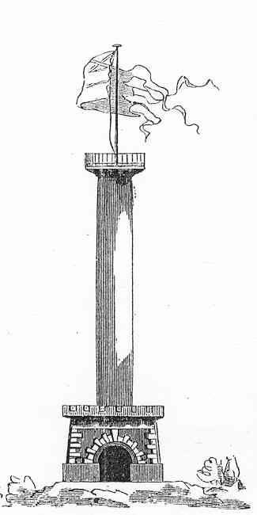

Södermalm i tid och rum

Ända långt in i vårt århundrade tyckte man om att bygga utsikthus för att skåda öfver Stockholm och dess vackra omgifningar. Högst uppåtsträfvande bland dem alla var pelaren i trädgården på Lilla Ersta, i folkets mun kallad »tandpetaren på Söder», anlagd af ställets ägare, konungens tandläkare Dubost. Denne lät, 1827, öfverstelöjtnanten F. Blom uppföra en byggnad af, såsom det heter i en samtida beskrifning, sällsam beskaffenhet, en kolonn af 48 fots höjd med inuti varande spiraltrappa, så rymlig, att två ej ovanligt korpulenta personer kunde gå förbi hvarandra. Kapiteletsplan höll 64 kvadratfot och var omgifvet med ett galler till åskådarnes säkerhet samt försedt med ett flaggspel. Midsommardagen, Carl Johans namnsdag, 1827 hissades första gången svenska flaggan på denna kolonn, som då invigdes. Dubost tyckes ej hafva varit ensam om kolonnens bekostande, ty det heter, att på nyssnämnda dag hade de i staden varande subskribenter till byggnaden infunnit sig på kapitelen, där de, under flaggans svajande, salut med kungliga skott och lifliga utrop »lefve vår älskade konung», drucko hans majestäts välgångsskål samt skålar för det öfriga kungliga huset.
Tvänne omständigheter hafva, säger samma beskrifning, bidragit att pryda denna kulle. Den första var drottningens besök 1816, den andra att höjden är nästan den betydligaste på Södermalm, med trädgård, anlagd i terrassform, vackra växter, drifhus, orangerier och vidsträckt utsikt öfver segelleden. Kolonnen, som pröfvades under de starka stormarna i juli 1827, jämfördes med Trajani och Antonini kolonner i Roma och franska armens (Vendôme-kolonnen) i Paris. Det är att märka, att kolonnen var af - trä. Beskrifningen slutar med följande loford:
»Öfverstelöjtnanten Blom, redan så fördelaktigt känd genom
sina flyttbara trähus och andra smakfulla byggnader, har genom
denna kolonns konstruktion satt stämpel på djärfheten af ett före
tag, hvari han icke haft någon föregångare inom Fäderneslandet».
Nu synas inga spår mer af denna djärfhet i trä. »Ersta pelare» stod ännu för få år sedan, men var då af den skröpliga beskaffenhet, att ingen vågade uppstiga till kapitelen, och slutligen
togs han ned.